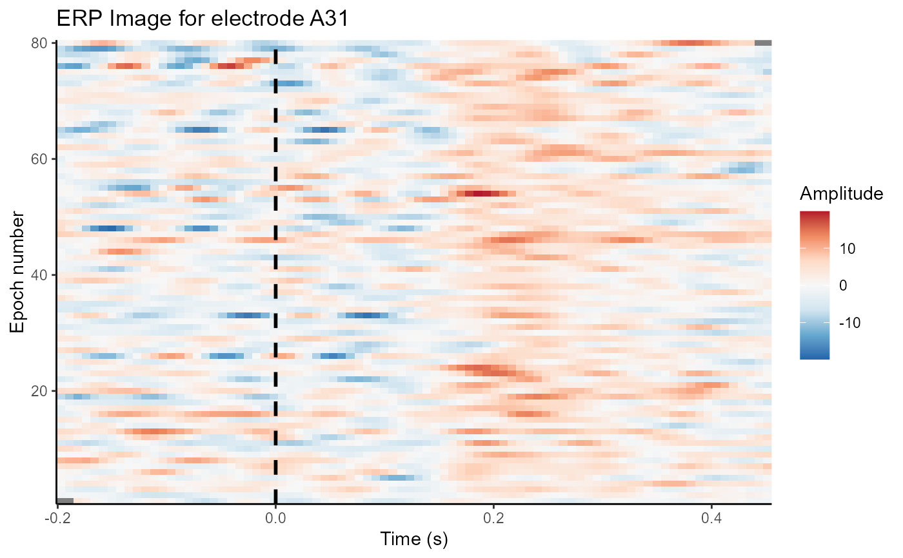
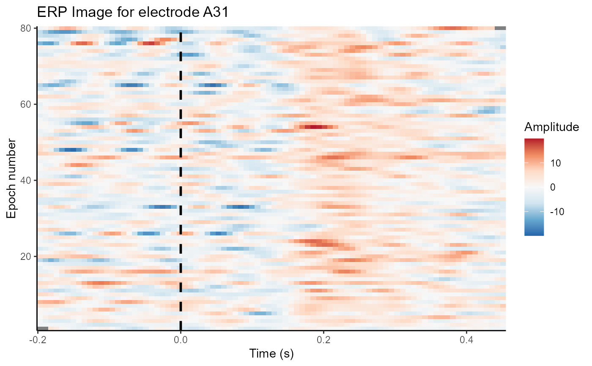

Plot an ERP image from a single electrode. Uses a boxcar smooth over a series of trials in order to make across-trial patterns more apparent.
erp_image(data, ...)
# S3 method for data.frame
erp_image(
data,
electrode = "Cz",
time_lim = NULL,
smoothing = 10,
clim = NULL,
interpolate = FALSE,
na.rm = TRUE,
...
)
# S3 method for eeg_epochs
erp_image(
data,
electrode = "Cz",
time_lim = NULL,
smoothing = 10,
clim = NULL,
interpolate = FALSE,
na.rm = TRUE,
...
)
# S3 method for eeg_ICA
erp_image(
data,
component = "Comp001",
smoothing = 10,
clim = NULL,
interpolate = FALSE,
na.rm = TRUE,
...
)
# S3 method for eeg_tfr
erp_image(
data,
electrode = "Cz",
time_lim = NULL,
smoothing = 10,
clim = NULL,
interpolate = FALSE,
freq_range = NULL,
na.rm = TRUE,
...
)Arguments
- data
Data frame or
eegUtilsobject to be plotted.- ...
Other arguments passed to the method.
- electrode
Electrode for which to generate an ERP image.
- time_lim
Time limits of plot.
- smoothing
Number of trials to smooth over when generating image.
- clim
Character vector of min and max values of plotting colour range. e.g. c(-5,5). Defaults to min and max.
- interpolate
Perform interpolation to produce smoother looking plots. Defaults to FALSE.
- na.rm
Remove trials with NA amplitudes after smoothing. Defaults to TRUE.
- component
eeg_ICAcomponent to plot- freq_range
A numeric vector specify the range of frequencies to average over. A single number will find the closest matching frequency. A vector of length two will match average over frequencies within that range.
Value
A ggplot object
Methods (by class)
data.frame: Default function operates on normal data frameseeg_epochs: Create anerp_imagefromeeg_epochseeg_ICA: Plot component image fromeeg_ICAeeg_tfr: Plot component image fromeeg_tfr
Examples
erp_image(demo_epochs, electrode = "A31")
 erp_image(demo_epochs, electrode = "A31", interpolate = TRUE)
erp_image(demo_epochs, electrode = "A31", smoothing = 5)

erp_image(compute_tfr(demo_epochs,
foi = c(4, 30), n_cycles = 3, n_freq = 20, verbose = FALSE, keep_trials = TRUE),
electrode = "A31", freq_range = c(8, 12))
erp_image(demo_epochs, electrode = "A31", interpolate = TRUE)
erp_image(demo_epochs, electrode = "A31", smoothing = 5)

erp_image(compute_tfr(demo_epochs,
foi = c(4, 30), n_cycles = 3, n_freq = 20, verbose = FALSE, keep_trials = TRUE),
electrode = "A31", freq_range = c(8, 12))